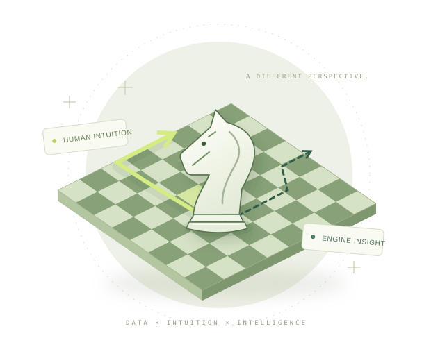

ChessDB 中国国际象棋棋手数据库
把分散的棋手、赛事与棋谱连在一起。查找棋手档案，追踪等级分，回放已归档的对局，让每一份记录都有出处。
让散落的数据连成线，让复杂的知识被理解。
我们用互动体验和智能工具，探索棋盘与科学世界。

从认识一位棋手，到读懂一项科学发现。
三个项目，让探索有了不同入口。
把分散的棋手、赛事与棋谱连在一起。查找棋手档案，追踪等级分，回放已归档的对局，让每一份记录都有出处。
人类会怎么想，机器会怎么走？将 Maia 3 的人类直觉与 Stockfish 19 的引擎研判并排呈现，在赛后复盘中读懂每一个分歧。
走进诺贝尔物理学、化学、生理学或医学奖的百年故事。通过科学史料与经典实验交互，探索重要发现如何改变我们理解世界的方式。
我们关心的不只是答案，
还有理解答案的过程。
把分散的记录整理成可查阅、可追溯的数据，让探索从可信的信息开始。
让人类直觉与引擎判断相互映照。从“哪一步更好”，走向“为什么这样走”。
工具服务于学习与复盘。尊重公平竞技，也尊重每个人独立思考的空间。
AIGC Labs 关注数据、科学与智能的交汇。我们从国际象棋和科学史出发，把对发现与人类决策的兴趣，变成可以亲手使用的产品。
看看我们正在做的事